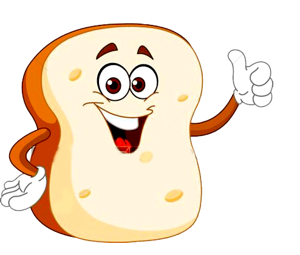

Breads, Cereals, Potatoes, Pasta and Rice

Why are breads, cereals, rice, and pasta important?
Wholegrain choices contain fibre to help your digestive system. These foods provide complex carbohydrates (starches), which are an important source of energy, especially in low fat diets. They also provide vitamins, minerals, and fiber. Foods on this shelf are the best energy providers for your body, so the more active you are the more you need.The Food Guide Pyramid suggests 6 to 11 servings of these foods a day.
Choose any 6 or more servings each day for all ages and up to 12 servings if you are active. Have at least half your servings as wholegrain breads and high fibre breakfast cereals. Try using brown rice and wholewheat pasta. Body size is important too. Younger, smaller children (5-13 years) need less than older children. Teenage boys, men and older men need more servings than girls or women. Most men need about 8 servings a day and most women need about 6 servings.
The actual portion that you eat may be bigger or smaller than the servings listed in the Food Pyramid. For example, a sandwich with 2 slices of bread counts as 2 servings. Other choices like 1 pitta pocket, 1 tortilla wrap, 1 small bagel, 1 small scone and one small French bread roll count as 2 servings.
What counts as a serving?
1 serving is:
- 1 slice of brown sliced bread or wholegrain soda bread
- 1/2 cup of cooked cereal, rice, or pasta
- 2-3 crackers or crispbreads
- 4 dessertspoons flake type high fibre breakfast cereal, without sugar, honey or chocolate coating
- 3 dessertspoons dry porridge oats
- 2 breakfast cereal wheat or oat biscuits
- 3 dessertspoons muesli, without sugar or honey coating
- 1 medium or 2 small potatoes, 2 dessertspoons of mashed potatoes
- 3 dessertspoons or 1/2 cup boiled pasta, rice, noodles (25g/1 oz uncooked)
- 1 cup of yam or plantain
Here are some selection tips:

- To get the fiber you need, choose several servings a day of foods made from whole grains, such as whole-wheat bread and whole-grain cereals.
- Choose most often foods that are made with little fat or sugars. These include bread, muffins, rice, and pasta.
- Baked goods made from flour, such as cakes, cookies, croissants, and pastries, count as part of this food group, but they are high in fat and sugars.
- Go easy on the fat and sugars you add as spreads, seasonings, or toppings.
- When preparing pasta, stuffing, and sauce from packaged mixes, use only half the butter or margarine suggested; if milk or cream is called for, usel owfat milk.
**Men and teenage boys who are active may need up to 12 servings a day.
Women and teenage girls who are active may need up to 8 servings a day.


The Food Guide Pyramid ©
All rights reserved.
2016